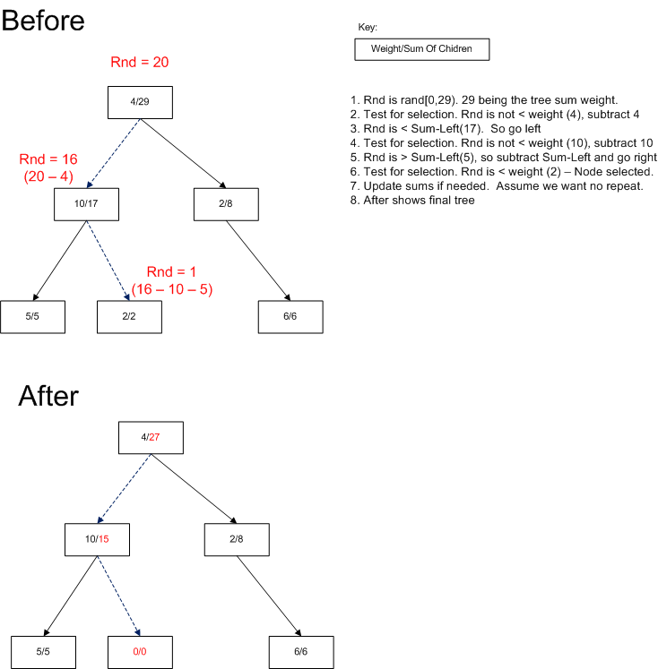
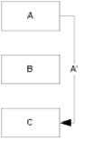
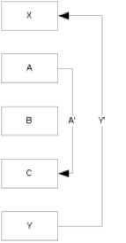

Resume
Joe Rohde's ResumeThis page contains links to my resume as well as code samples.
Code Samples
Included are samples for an arena style memory allocator, a red black tree with weighted random selection, and size optimization for branch instructions during code generation using a graph algorithm.Arena Allocator
The arena allocator is a specialized allocator which allows for very quick allocation and very efficient deletion. Unfortunately, it only applies to a very rigid usage pattern. That pattern is that a significant number of allocations will be made, and they are rarely resized or deleted before the entire ‘arena’ is ready to be deleted. The typical use pattern is in a compiler where the body of a function is parsed, used to whatever end desired, and then the entire body thrown out.This project is written at the ‘C with objects’ level.
The general arena pattern is implemented as follows:
- The arena is extended in 4K blocks. If a single item would be larger than 4K, a single block of that size is allocated.
- The 4K blocks are chained
- This was designed to a specific problem. If it were to be generalized the 4K would be a constructor parameter of the arena. An additional ‘feature’ that was specific to the problem being solved is that the initial block is only 192 bytes instead of 4K, as it turned out a huge majority of my use cases profiled under this number. Those that were larger tended to be much larger.
- The allocator supports optional under/overflow checking for each allocation.
- The allocator supports optional usage tracking for measuring effectiveness.
- Can be trivially turned off to compare to regular new/delete.
- Allocation typically just an increment if a pointer offset into the arena, and a return of the previous pointer. Extra bookkeeping is done when crossing over the block boundary. Care is taken to encourage a C++ compiler to inline the common case. A special ‘new’ is defined that takes an arena pattern. Usage looks like: CFoo *p = new (pArena) CFoo();
- Delete is overriden similarly in order to support the optional over/underflow buffer checking.
CArenaAllocator.h (download original source)
CArenaAllocator.cpp (download original source)
Tree with weighted random selection
The original motivation for this code was that I was writing a touch screen media player. I wanted efficient sorted access to data via a binary tree like structure, but I also wanted an efficient way to randomly select songs weighted by their ‘star’ ratings.This project is written as a template collection class. It is kept simple in a style more common to C# or Java than to C++. The code is commented for what I would change to make it a bit more rugged for industrial use.
This algorithm works by storing extra data in each node of the tree. The three stored values are
- Actual song rating (immutable)
- Sum of songs lower in the tree
- Transient song rating
The transient song rating is initially the same as the actual song rating. If the song is selected, the transient rating would be left alone, dropped to zero, or cut in half based on whether the selector was set for ‘repeat is fine’, ‘never repeat’, or ‘cut chance of re-selection in half’ respectively.
The algorithm works as follows:
- When an item is added to tree, the weight is retrieved and set in the node. When the node is finally placed in the tree, the ‘sum’ is set to the sum of the 2 immediate children’s sums and the node’s own weight. The current node’s weight is then propagated into the sums of all parents up to the root.
- Node rotation is aware of the weight sums, and makes the needed adjustments.
- Random selection is done by taking a random [Rnd] value from 0 to the weighted sum in the root.
A current node [C] is set to the root.
- If R is less than C’s weight [Cw], return the node. Optionally modify the weight of C and propagate the that impact to the root.
- Else
- Rnd = Rnd - Cw
- If the left child [L]’s sum weight is less than Rnd, C = L
- else Rnd = Rnd - L’s sum; C = right child
- Back to first step
It’s a bit easier to explain with a picture:

Source
Tree.h (download original source)
TreeMain.cpp
(download original source)
SampleOut
Minimal branch size encoding using a graph algorithm
In a compiler code generator, there are often multiple branch instructions optimized for the distance of the jump. This is especially true in bytecode systems like .Net. There is often a 2 byte instruction for jumping -128/127 bytes, and a larger instruction for much longer jumps. The core problem is trying to know which instruction to encode when the span between the branch and destination contains 1 or more unresolved branch sources.This project is written using STL, and TR1 where convenient.
While programs contain many many branch instructions, in the end they all degenerate into the following considerations:

In this case the encoding is simply a matter of knowing if the length of the jump fits in a byte.
Now consider another case:

In this example it’s easy to encode A’, but Y’ cannot be encoded until A’ is. The encoding size of A’ could directly impact whether or not Y’ can be encoded small. Note that the target of A’ does not directly impact the discussion.
Conflicted Arcs
This is a degenerate case. The source of A’ is contained in the arc of Y’, and vice versa. It is not worth working ‘hard’ to solve this case, so it is sufficient to go through the arcs, check if each enclosed arc will be encoded short, and if so, encode this one short if it can be. Do this for all cross reference arcs. If at the end there are still unbound arcs, just encode them all large.
Realistically there is a ‘good enough’ solution by just running through the branch sources:
- For each branch, if all enclosed branches will have a fixed size encoding, encode it appropriately taking those sizes into account.
- A branch’s fixed sized encoding is determined by: if the branch can be encoded short even if all its enclosed branches are long, it will be short. If a branch would be long even if all its enclosed branches are encoded short, it will be long.
- Either restart since some some choices that were indeterminate may have become known, or just force whatever is left long.
While each of these cases is reasonable on its own, a real program can contain intermingling of the above cases . Ideally we would like a data structure that could break it down into the degenerate cases noted here and dealt with in the fashion of these 3 cases.
Consider the following graph structure:
- Each vertex in the graph represents a branch arc. From the last figure, there would be 2 nodes A’, and C’.
- Each directed edge represents an arc that spans the source of the target arc. In the last figure A’ and C’ would have directed edges to each other. In the middle figure, only Y’ would have an edge to A’, not the other way around.
This graph is reasonably easy to generate from a typical ‘intermediate compiler format’ (IR). The IR typically contains markers for labels that represent the target of a branch, and the branch instructions themselves only target a label at this point. When forward scanning the IR whenever a new label ‘L’ or branch to L is seen, any branch source ‘S’ seen before the ‘other end’ of L becomes a directed arc from L to S. I’ve glossed over the fact that labels are often targetted more than once. This is easy to deal with either by associating a reference count for the label and referring the arcs as L1, L2, etc...
The code generating solution is to walk the graph and for all vertices with no outgoing edges, encode the branch; remove the vertex; repeat until no more vertices exist without outgoing edge. If the graph is not empty, solve the degenerate cases and start over. If a full iteration of these two steps does not resolve anything new, just encode whatever is left as long.
It should not require more than 1 or 2 passes to solve any but the most degenerate (and likely hand written) case.
Source
DirectedGraph.h
Instruction.h
Instruction.cpp
TestHarness.cpp